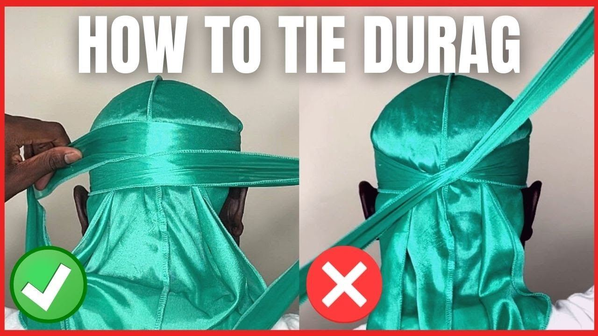

The No-Knot Durag Method: Full Compression, Zero Forehead Lines
The knot is the oldest part of the durag tie — and for a lot of wavers it is also the problem. Knots slip, knots dig in, and a knot tied at the front stamps a line across your forehead that you then spend the morning brushing out. The no-knot method replaces the knot with crosses and tucks, using friction and the cape itself to hold everything in place. PhdInWaves (@Phdinwaves) teaches the classic 360 tie in the video below; this guide takes that same structure and removes the knot from it, step by step.
Why wavers drop the knot
A knot concentrates all the holding force into one small point. That point is where pressure, slipping, and forehead lines all come from. Spread the same force across two wide, flat tails crossed at the front and tucked at the back, and you get compression that is both stronger and more even — the whole band works instead of one lump of fabric.
The no-knot tie is also the better choice if you wear your durag under a hat, a helmet, or a fitted cap during the day. There is no knot to poke through or shift the fit. And for light sleepers, there is nothing hard pressing into the back of your head against the pillow.
The method: cross, cross, tuck
Tie the durag on seam-out as usual, front edge level above the eyebrows. Pull both tails straight back flat, cross them behind your head, and bring them forward. Cross them once at the front — low, on the durag's edge — then take them back a second time. Instead of knotting, lay each tail flat along the band and tuck the end underneath the wrap on the opposite side, pulling snug as you go.
Finish by pulling the cape flap down over the tucked tails. The flap is not decoration here — it is the lock. It pins the tucks in place and presents a smooth surface to the pillow, so nothing catches and pulls loose while you sleep. Smooth the whole head with your palms and check for ridges before you call it done.
Making it hold all night
The no-knot tie lives or dies on fabric friction. Silky fabrics are slippery by design, so on a silky durag keep your tucks long — wrap the tails around fully rather than leaving short ends that can creep out. Velvet and mesh grip better and hold a tuck more forgivingly, which is why many wavers run the no-knot method on velvet for sleep and silky for daytime shine.
If your tie ever loosens overnight, the fix is almost never more tightness — it is a longer tuck and a flatter lay. Retie once with the tails pulled completely smooth, no twists, and the method will hold through a full night's sleep without a single knot anywhere on your head.
Watch: the 360 waves tie method from PhdInWaves — the base tie this no-knot variation builds on
Video: “How To Tie Durag | 360 Waves Method” by PhdInWaves (@Phdinwaves) · Watch on YouTube
Shop the gear
Everything in this guide runs on the right gear: a durag that holds compression without slipping, a cap that stays put, and fabric that treats your hair right. The durag.store launch lineup is built to that standard — dual-layer construction, long tails, and stitching made to survive the routine. Join the launch list and use code GOLDSTANDARD for 15% off your first order.
Keep learning
- How to Tie a Durag for 360 Waves: The Standard Tie, Step by Step — Basic · Tying & Basics
- Your First Durag Tie: A Beginner's Walkthrough With Zero Guesswork — Basic · Tying & Basics
- How to Wear a Durag All Day Without It Slipping, Sliding or Looking Sloppy — Basic · Tying & Basics
Sources: Video — “How To Tie Durag | 360 Waves Method” by PhdInWaves (@Phdinwaves), youtube.com. Guide written by the durag.store Wave Lab.